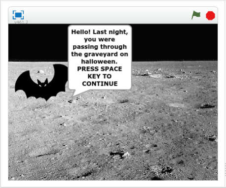
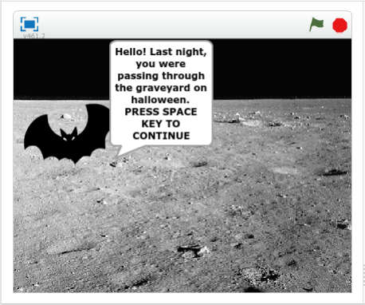

Bad Halloween
September 2018; Course: Computer Science Principles
The first partner project, creating a game using the scratch platform. The objective of this project was to create a game using Scratch and getting familiar with the platform. My role in this project was to lay out a breif plan of what to include in the game, keeping in mind the restrictions of the platform. I also took account of updating the plan as time moved along. I learned that some things must be compromised for a successful end product. Sure there might be some things you wished the project had and some things you didn't. But you always have to look at the bright side, a least there were some ideas of yours that ended up being used. Partne projects will never be successful until both sides are willing to cooperate. Because this project involved teamwork, we were able to use things that one was better at than the other to our advantage and get things done faster. For some days, my partner was absent, but I tried my best to get some work done so that we weren't behind to make up for it. I was able to set up the base of the game which really made things easier for the time we had left.
Documentation 
